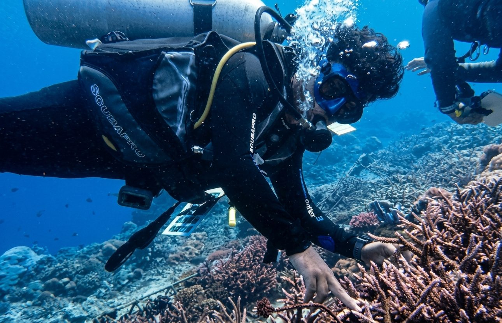
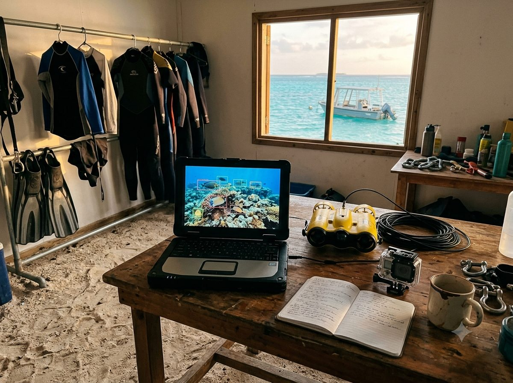
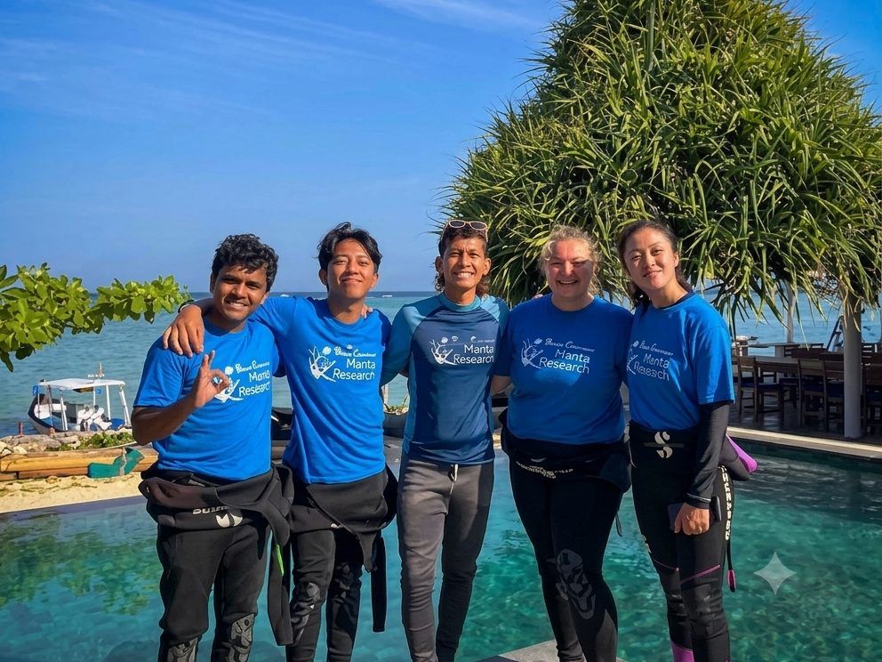
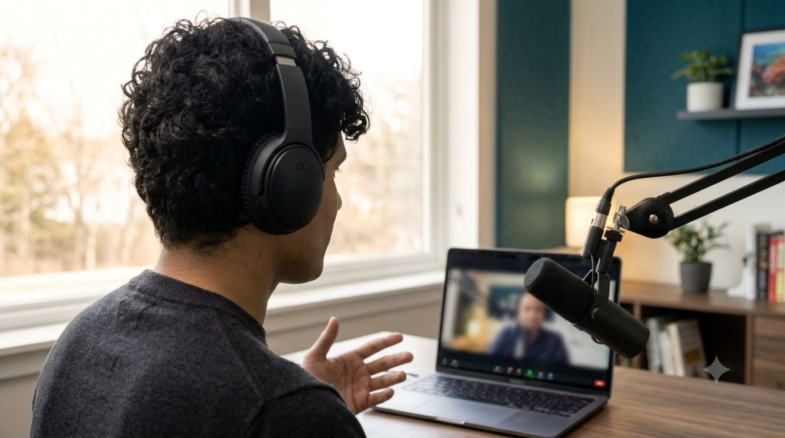
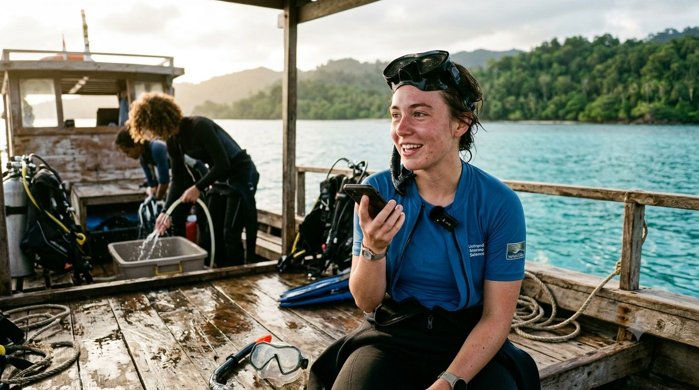
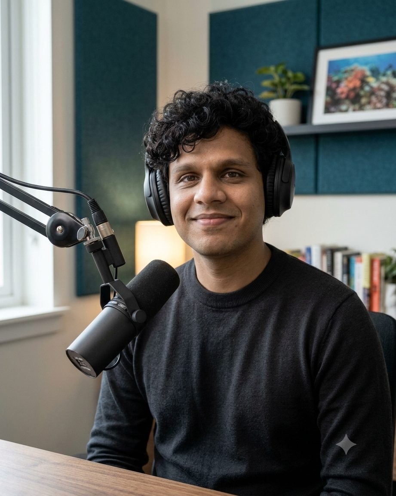
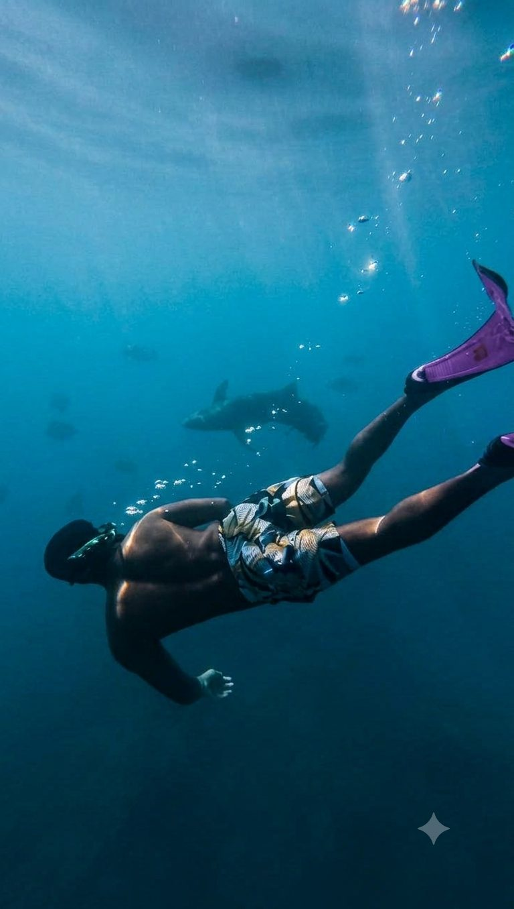
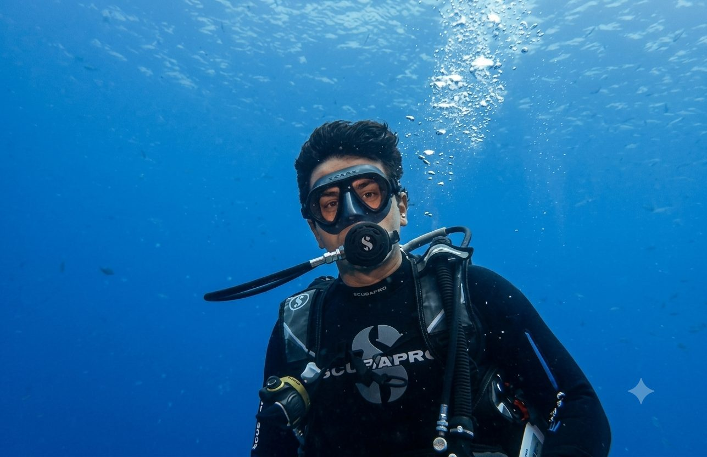
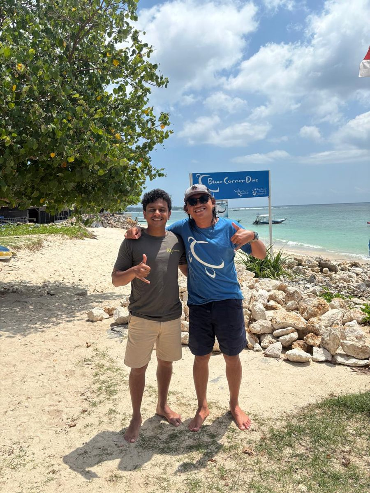

Reefcode
Conversations with the people protecting the ocean, and the science and technology behind their work.
What happens below the surface, explained by the people working there
Reefcode talks with marine scientists, ocean-tech founders and early-career researchers about the problems they're working on, the tools they use, and how they got into the field.

Science
What researchers are learning about reefs, fisheries, plastics and a warming ocean, and what it means for the rest of us.

Solutions
The technology in use today: machine learning, satellites, sensors and underwater robotics, plus the policy that makes them count.

People
Career paths into ocean work, the decisions behind them, and honest advice for anyone who wants to follow.
Two kinds of episodes
Every episode is recorded on video and released on Spotify, YouTube and other podcast apps.

Conversations
Long-form interviews with scientists, founders and leaders at ocean organisations about the work they're doing now.

Field Notes
Shorter episodes with students and early-career researchers, recorded close to the fieldwork: what they're studying, what surprised them, and what comes next.
Be a guest on Reefcode
If you research, build or fund work that protects the ocean, we'd like to hear from you. Students and early-career researchers are especially welcome.
- Send a short pitchA few lines about your work and what you'd like to talk about.
- Get the questions in advanceWe share the topics and sample questions about a week before recording.
- Record remotelyAbout 45 minutes from your browser. Wired earphones and a quiet room are all you need.
- Share the episodeWe send you the episode and short clips to post when it goes live.
Pitch sent. Thank you.
We read every pitch and will reply to the email you gave us.

Your host
Manu Paramesh
Machine learning engineer by day, part-time fish on weekends. Based in Bangalore.
I've spent more than a decade building machine-learning systems, with work that's taken me across India, Africa and Europe. These days some of it is audio ML, which is a fancy way of saying I teach computers to listen. Starting a podcast seemed like a fair way to do some listening myself.
Training in coral conservation with Blue Corner Marine Research in Indonesia changed how I see my own work. The people protecting the ocean are doing remarkable things with very little attention, and many rely on the same kinds of tools I use every day: cameras and models that count fish, satellites that track boats, hydrophones that listen to reefs.
Reefcode is how I hand them the mic. If you work on the ocean, in a lab, on a boat or in a startup, I'd love to hear what you're working on. If you're just curious about what's going on down there, pull up a chair. No wetsuit required.
- Ironman finisherStill not entirely sure why I signed up
- 5+ dive spotsScuba and freediving. The fish remain unimpressed.
- Coral conservationTrained with Blue Corner Marine Research
- Guitar, occasionallyAnimals are the only audience that stays for the whole song



Get in touch
For partnerships, press and everything else. Guests, please use the pitch form.
hello@reefcodeshow.com